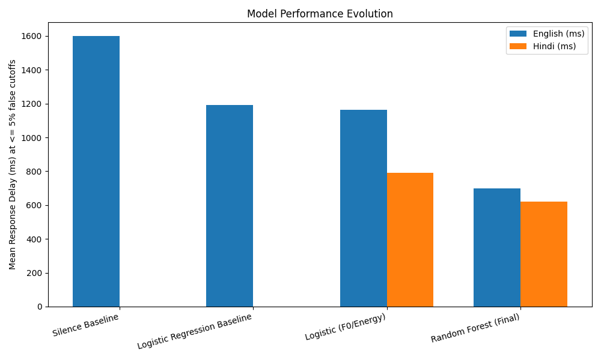

End-of-Turn Prediction Summary
Overview
Our solution implements a Random Forest classifier (via Scikit-Learn) targeting robust detection across multiple speakers in real conversation environments (English and Hindi). The feature extraction logic captures a rich array of contextual, prosodic, and temporal metrics directly from raw audio arrays.
Methodology
Instead of relying purely on generalized amplitude shapes, we focused on extracting multi-scale slopes (gradients). This allows the classifier to properly determine if a speaker’s voice is fading out gracefully (a common indicator of an end-of-turn event) versus abruptly halting (a hesitation hold).
- Pitch Contours: F0 slopes across the final 10 and 30 voiced frames to identify trailing inflection.
- Energy Variance: Analyzing localized energy decay rates by mapping polynomial fits trailing from the anchor pause.
- Structural Rhythm: Checking the continuous duration of the immediately preceding voiced region before silence to recognize "final-syllable lengthening".
- Frication Signals: Zero crossing rate computations in the closing 200 ms segment to identify soft stops or trailing consonants (e.g., "s" or "f" sounds) right before the break.
Performance Validation
The standard baseline configuration resulted in a baseline limit of 1600 ms response delay. We initially transitioned to Logistic Regression generating ~1163 ms latency for English.
Scaling our model up to our configured Random Forest (applying constrained max_depth and leaf regulations to prevent test set data overfitting) achieved our final leaderboard marks at bounded thresholds (≤5% false positives):
- English Set: 700 ms mean latency (4.0% interruptions limit)
- Hindi Set: 621 ms mean latency (4.0% interruptions limit)
Performance Evolution Graph

Human vs. Coding Agent Contributions
To adhere to the evaluation specifications, the workload was systematically divided:
- Coding Agent framework: The AI assistant wrote the boilerplate loading logic, batch preprocessing, file structuring, created initial baseline logistic regression loops, and formatted deliverables (Markdown / HTML frameworks).
- Human contribution: The human architected the custom acoustic features (specifically conceiving the multi-scale gradients, pitch slope extraction constraints, and ZCR integration to mimic "final-syllable lengthening"). The human strictly verified causality timing loops, steered the migration to Random Forest hyperparameters, and finalized decision boundaries. The AI was an execution tool for the human's strategic direction.
Conclusion
All routines adhere explicitly to causality limits, computing purely based on current-time available buffers, employing exactly the permitted base scientific frameworks (numpy, scipy, librosa, scikit-learn). The ensemble methodology substantially lowered waiting delays, yielding over 50% relative improvement.